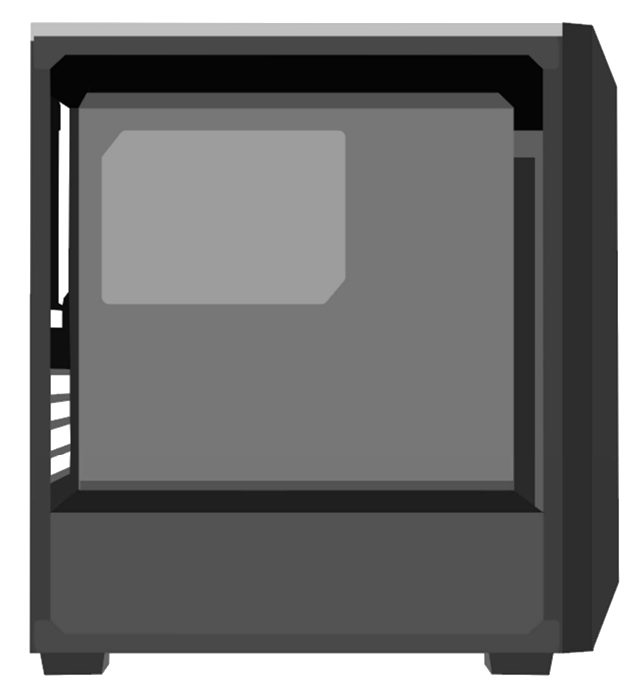

Gabinete
O gabinete é uma peça essencial de qualquer computador, embora muitas vezes seja subestimado. Ele desempenha um papel vital, pois é o compartimento físico que abriga todos os componentes internos do sistema, como a placa-mãe, processador, memória RAM, disco rígido, unidade de fonte de alimentação, placas de expansão, cabos e sistemas de resfriamento. Mais do que apenas uma "caixa" para manter tudo junto, o gabinete é projetado para oferecer proteção, organização e ventilação adequadas, garantindo que os componentes funcionem de maneira eficiente e segura.
Funções principais do gabinete
1. Proteção Física:
- O gabinete protege os componentes internos contra poeira, sujeira, umidade, impactos físicos e outros elementos externos que poderiam causar danos ao hardware. Ele também ajuda a prevenir acidentes, como o contato direto com os circuitos elétricos.
2. Organização dos Componentes:
- Ele fornece uma estrutura específica para fixar e organizar os componentes, como slots para discos rígidos, suporte para placas-mãe e baias para unidades de armazenamento. Isso facilita a montagem e manutenção do computador.
3. Ventilação e Resfriamento:
- Uma das funções mais importantes do gabinete é permitir e facilitar a circulação de ar para manter os componentes internos resfriados. O calor gerado pelo processador, placa de vídeo e outros dispositivos pode comprometer o desempenho e reduzir a vida útil do sistema se não for dissipado adequadamente.
- Muitos gabinetes modernos possuem espaço para ventiladores, entradas de ar e até mesmo suporte para sistemas de resfriamento líquido.
4. Estética e Design:
- Além de funcional, o gabinete contribui para a aparência geral do computador. Modelos modernos oferecem designs elegantes e até mesmo iluminação RGB para personalização, tornando o computador não apenas uma ferramenta, mas também um item decorativo.
5. Facilidade de Acesso:
- Gabinetes bem projetados facilitam o acesso aos componentes internos para upgrades, limpeza ou substituições. Muitos incluem painéis removíveis e sistemas de gerenciamento de cabos que tornam essas tarefas mais simples.
Componentes do gabinete
Um gabinete típico possui diversas partes que desempenham funções específicas:
1. Estrutura Principal:
- É o corpo do gabinete, geralmente feito de metal (aço ou alumínio) e plástico, que dá suporte e proteção aos componentes internos.
2. Painel Frontal:
- Localizado na parte dianteira, geralmente inclui botões de energia (Power) e reinicialização (Reset), portas USB, entrada e saída de áudio, e às vezes baias para unidades de CD/DVD.
3. Painel Lateral:
- Muitas vezes removível, ele permite o acesso aos componentes internos. Alguns modelos possuem painéis transparentes ou em vidro temperado para exibir o hardware.
4. Compartimentos Internos:
- Slots e suportes para instalar componentes como HDDs, SSDs, placas de vídeo e fontes de alimentação.
5. Espaços para Ventilação:
- Áreas projetadas para a instalação de ventiladores ou radiadores de sistemas de resfriamento líquido.
6. Gerenciamento de Cabos:
- Alguns gabinetes oferecem canais ou compartimentos específicos para esconder e organizar os cabos, melhorando o fluxo de ar e a estética.
Conclusão
O gabinete é muito mais do que uma simples estrutura para segurar os componentes do computador. Ele desempenha um papel crucial na proteção, organização e resfriamento de todo o sistema, influenciando diretamente o desempenho e a longevidade do hardware. Ao montar ou atualizar um computador, escolher o gabinete certo é essencial para garantir não apenas a funcionalidade, mas também uma experiência visual e prática agradável. Investir em um bom gabinete é garantir que seu sistema funcione de forma eficiente, segura e com estilo.